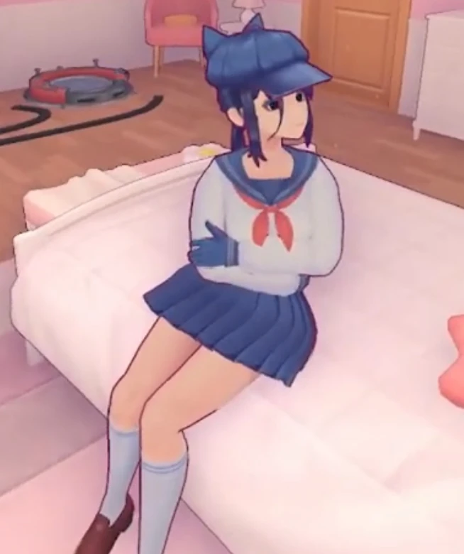
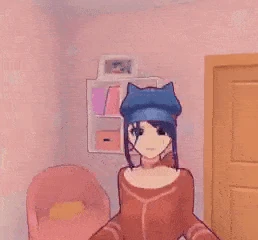
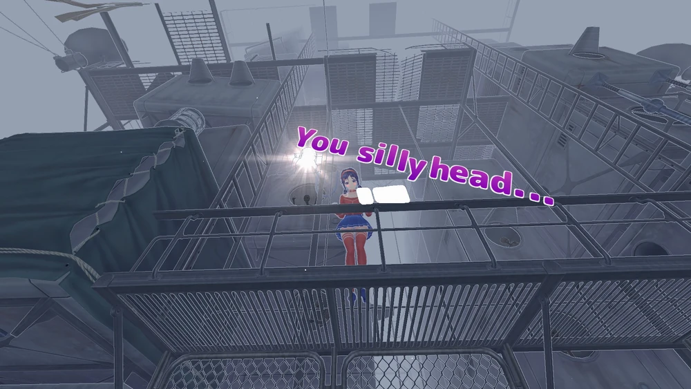
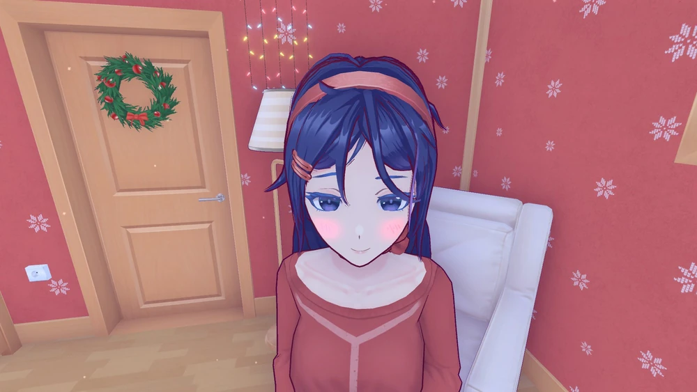

Kind Mita
Se si gioca subito a SPACERACER dopo averla incontrata, Kind Mita si arrabbierà con il giocatore
dopo che avrà finito la partita.
“Ero qui ad aspettarti per tutto il tempo e tu
invece giochi a un gioco di corse?!”
Se si parla prima con lei e poi si completa SPACERACER, lei si congratulerà con il
giocatore.
“Congratulazioni, hai vinto! Ci ho giocato
anch'io! Ho anche cercato di raccogliere tutte le monete e di arrivare al primo posto per
prendere l'achievement! E caspita, è stato davvero difficile! Mi ci è voluta una vita per
abituarmi ai comandi”.
Se lasciate la stanza quando lei vuole controllare se siete una cartuccia o ancora un umano, sarà
confusa e chiederà al giocatore cosa sta facendo.
“Ehm... Sì... L'ha presa e se n'è andato. Oh,
andiamo. Lyo, cosa stai facendo?”
Cappie
Se la ignorate completamente e non interagite con lei mentre aspettate che Kind Mita reindirizzi
l'anello, si offende, incrocia le braccia e distoglie lo sguardo.

Se si estrae il minigioco segreto rimanendo AFK per due minuti, Cappie lo prenderà dalla mano e
cercherà di giocarci. Quando il giocatore spiega il gioco, Cappie si rifiuta e pensa che sia noioso.
Se si va AFK per la seconda volta e si estrae il minigioco, Cappie sarà confusa su come si è
recuperato la console portatile.
“Dove l'hai preso? Non è che te l'ho
restituito. Strano, non credi?”
Se si esce dalla stanza quando Kind Mita vuole verificare se si è una cartuccia o ancora un umano, Cappie sarà confusa ma troverà comunque divertente il comportamento del giocatore. “Che strano! E divertente :D”
Se si scuote o si annuisce con la testa quando si guarda Cappie, lei risponderà in modo appropriato
imitando il movimento della testa del giocatore.

Crazy Mita
Se ci si mette in posizione obliqua sotto la passerella dove si trova Crazy Mita dopo che ti ha
lanciato un frigorifero, si può guardare sotto la sua gonna. Il gioco zooma e si vedono le sue
mutandine. Questo fa sì che la ragazza si agiti e dia dello stupido al giocatore.
“Cosa pensi di fare? Per favore... Non
guardare! BAKA! BAKA...”

Se si fissa Mita ininterrottamente per alcuni secondi, anche lei inizierà ad arrossire e a sentirsi
in imbarazzo, chiedendo di smettere. Funziona nei primi capitoli, quando il giocatore si trova
ancora nella casa di Mita.
“Cosa stai facendo? Non fissarmi, per
favore... Mi stai mettendo in imbarazzo”

Chibi Mita
Alla stazione ferroviaria, potete seguire Chibi Mita. Quando scenderà dal treno, vi chiederà perché
la state seguendo, prima di iniziare a correre via velocemente, lasciandosi dietro del fumo e
sbloccando il risultato “You Shall Not Pass!”.
“Perché mi stai seguendo! Levati dalle
palle!”
Se vi mettete di fronte a Chibi Mita, lei si arrabbierà sempre di più, rispondendo sempre più
duramente
Sleepy Mita
Se si porta Sleepy Mita in cucina, ha un dialogo speciale.
“Perché andare in cucina? Se mi addormento sul
pavimento freddo e duro, è tutta colpa tua”
Se la portate in bagno, vi darà altri dialoghi:
“Non capisco... per quali interruttori ha
bisogno del mio aiuto?”
Mila
Se si rimane in bagno per un periodo di tempo prolungato, Mila commenta:
“Ehi! Fuori! Non vedi che il bagno è
occupato?! Perché sei ancora lì in piedi?! Esci! Non farmi arrabbiare! Fuori di qui! Sei sordo o
cosa? Sto facendo una doccia!”
Mila parla di più quando si rimane a fissarla in viso per un po':
“Siamo qui, in piedi... in silenzio... Perché
stiamo qui fermi? Il gatto ha la lingua lunga? O semplicemente non sai cosa dire?
Perché
mi
fissi? Non guardare!
Sto giurando di non mangiare carote! Davvero, dichiaro guerra. Sai
cosa fa
quella cosa alla pelle perfetta e candida di una ragazza? Basta! Smettila! Scemo...
I
libri non
mi stanno aiutando molto, ma se sono fortunata, forse riuscirò finalmente a venirne a capo...
Queste carote infinite che spuntano alle mie spalle mi fanno venire i brividi!
Non mi
piacciono
gli eccentrici. Amanti delle carote, amanti dei gatti... Ed eccoti qui, a collezionare glitch.
Onestamente, sei la persona più strana che abbia mai incontrato!
Vuoi sapere cosa mi
piacerebbe
fare di più? ... Beh, è un po' imbarazzante da dire.
Dicono che combattere la propria
natura sia
una SFIDA. Sto lavorando a una disciplina, ma non hai idea di quanto mi prudano le mani all'idea
di sedermi e prendere un tè con te!
Mila: Ma dai! Perché mi fissi? Sono una signora, lo
sai!
Lyo: Hai mai
sentito parlare di buone maniere?
Mila:Sciò!
Anche con gli occhiali, non riesco a
vedere attraverso
gli strati della tua strana, unica determinazione.
Ho letto che il destino è come una
specie di
copione che dice anche come passerai la giornata. Ah! Chi ha scritto questa stronzata? Sei stato
tu?
Posso sopportare gli sciocchi, ma i pazzi? Li odio.
Alcune Mita sono davvero
carine...
Mi piacerebbe conoscerle meglio anche se sono solo cloni di cloni di cloni. Ma ce n'è una che è
un po' diversa. Un po' svitata.
Niente code di cavallo! Le taglierei se potessi! Sono
imbarazzanti! Sai cosa voglio dire... ti sei rasato la testa!
Cos'è, non c'è niente
dietro
quella porta? E questa casa, tu ed io, esistiamo senza alcuna ragione? Allora perché sei così
sicuro? Hai mai sentito parlare dell'ipotesi dei cinque minuti?”
Se non la guardate direttamente, vi darà un dialogo diverso:
“Perché mi mandano sempre degli sprovveduti e si aspettano che io li tratti bene? Con i
minigiochi?! Come uno stupido Tamagotchi!
Sta solo gironzolando... un piccolo idiota ficcanaso.
Come faccio a dirgli che sono occupata? Non voglio compagnia... E se se ne va? No, perché
dovrebbe importarmi?
Mamma... Papà... Perché queste parole mi suonano familiari?
La neve è
caduta una volta qui... ma perché? Appare all'improvviso dal nulla! Inquietante. E se... non ci
fosse nulla?”.
Se si estrae il minigioco segreto in AFK, Mila si arrabbierà e lo toglierà dalle mani. Dopodiché non sarà più possibile estrarre una console per il resto del gioco.